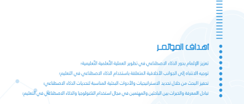
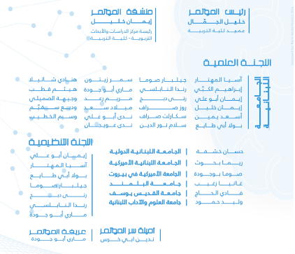
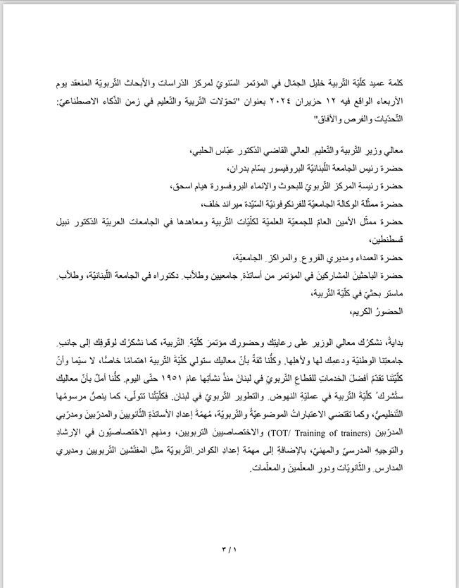
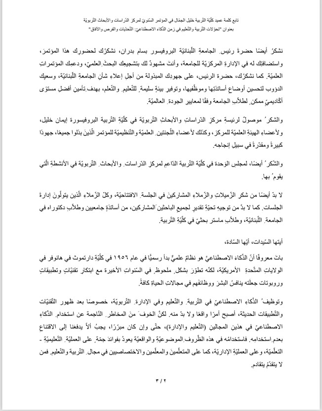
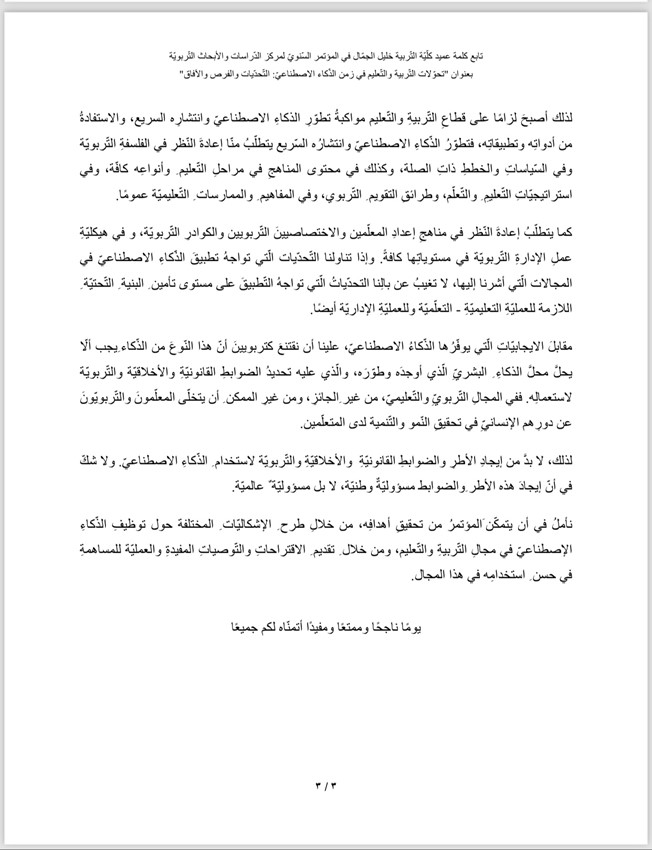
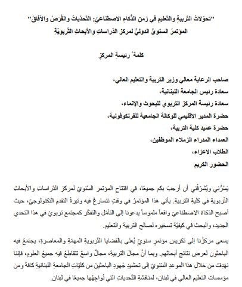
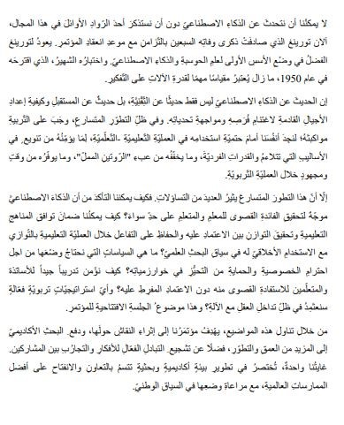
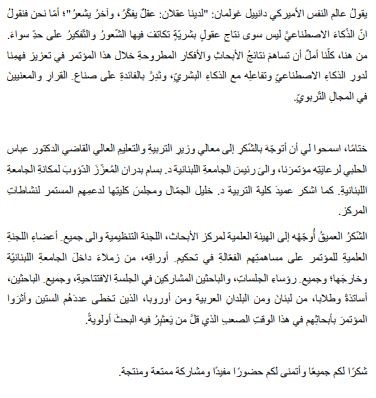

المؤتمر السنوي لمركز الدراسات والأبحاث التربوية في كلية التربية - الجامعة اللبنانية
"تحولات التربية والتعليم في زمن الذكاء الاصطناعي: الفرص والآفاق والتحديات"
الجامعة اللبنانية في 12 حزيران 2024
Objectives
Committee
Speech of the dean of Faculty of Education
  Speech of the president of the Centre for Education Research and Studies (CERS)
  Program
To download the full program, click herePublications
:ملاحظة
لا يتحمل المركز المسؤولية عن محتوى الأوراق المقدمة، أو عن التدقيق اللغوي، أو عن دقة وصحة المراجع والمصادر المذكورة او عن الاتباع الدقيق لقواعد ال APA7.
ان الأسماء التي لم ترد، إما ان الباحث لم يقدم البحث او لم يحضر المؤتمر لعرض البحث.
Articles
الجلسة
الأولى 12.00-13.00 (قاعة 1)
إدارة
الجلسة: أ.د.
صوما بو جوده -
الجامعة الأميركية
في بيروت
Effective
methodologies for teaching AI and its tools for students at the faculty of
Education
ابراهيم
الكبي، نينات
كامل، نهى
حصني -
الجامعة
اللبنانية
Fostering Creativity Via
AI Robotics
أم
البنين جمالي
- جامعة
نوتنغهام -
المملكة المتحدة
Exploring the potential of
using an AI large language model for automated scoring systems: a case study on
web development
جيلبير صوما، سمر
زيتون، اليان
يوسف -
الجامعة
اللبنانية
AI in education: Fostering inclusive
learning environments-
ميراي
شدياق الحاج -
الجامعة
اللبنانية
الجلسة
الثانية 12.00-13.00 (قاعة 2)
إدارة
الجلسة: أ.د.
غانيا زغيب -
جامعة
البلمند
غنى
بدوي -
حبيب بدوي –
سحر الشاعر -
الجامعة
اللبنانية - الجامعة
الأميركية في
بيروت
سناء
شهيب، إيمان
شعبان -
الجامعة
اللبنانية
لارا
شمعون -
الجامعة
اللبنانية
AI in
personalized learning for secondary classes
ليال
مرعي، آية
مرعي -
الجامعة
اللبنانية
الجلسة الثالثة 12.00-13.00 (قاعة 3)
إدارة
الجلسة: أ.د.
ريما بحوث –
الجامعة
اللبنانية
الأميركية
Ethical use of generative AI
among Lebanese university faculty of education master’s students
رباب
حطيط، ايمان
خليل -
الجامعة
اللبنانية
Perception of teachers’ career
in the AI era, opportunities, and threats
فريد قاصوف -
الجامعة
اللبنانية
Integration of ChatGPT in 5E
inquiry model and its
impact in learning biology
زينة
حداد – ايمان
أبو علي -
الجامعة
اللبنانية
الجلسة
الرابعة 13.00-14.00 (قاعة 1)
إدارة
الجلسة: أ.د.
حسّان خشفة –
الجامعة
اللبنانية
الدولية
فاعلية
تطبيقات
الذكاء الاصطناعي
في وضع خطة
بحث في مادة
منهجية البحث
التربوي
ايمان
عباس - رندا
ميقاتي -
جامعة طرابلس
Teachers' opinions on
integrating robotics in STEM education for elementary learners
فاتن
ادلبي -
الجامعة
اللبنانية
The effects of
magicschool.ai use on the achievement of dyslexic students on achievement in science
فاطمة
حيدر -
الجامعة
اللبنانية
محيي
الدين عيد – سكارلت
صراف -
الجامعة
اللبنانية
الجلسة
الخامسة 13.00-14.00 (قاعة 2)
إدارة
الجلسة: أ.د.
وليد حمود -
جامعة العلوم
والآداب
اللبنانية
توطين
تطبيقات
الذكاء
الاصطناعي
ببرامج إعداد
معلمة
الطفولة
المبكرة في
ضوء متطلبات العصر
الرقمي
حسام
عمر - جامعة
دمنهور - مصر
جميلة
بلوط -
الجامعة
اللبنانية
فعاليّة
إعداد وتدريب
المعلمين بإستخدام
تقنيات
الذّكاء الإصطناعيّ
الفرص
والتّحديات
غسان
جابر، أحمد
عبود، فاطمة
رحال -
الجامعة الإسلامية
- الجامعة
اللبنانية -
جامعة ليموج الفرنسية
مهارات
التواصل
الفعال في
التعليم
المدمج: تحديات
وفرص وآفاق في
زمن الذكاء
الاصطناعي
الجلسة
السادسة 13.00-14.00 (قاعة
3)
إدارة
الجلسة: أ.د.
فادي الحاج –
جامعة القديس
يوسف
L’IA
au service de l’enseignement-apprentissage de la poésie française
إميلي شماس
فيعاني - جامعة البلمند
L’intelligence artificielle au service de
l'évaluation
عادل
المدحي -
جامعة ابن زهر
- المغرب
L’intelligence
artificielle dans l’enseignement / apprentissage de la langue française
ميراي
رياشي - جامعة
البلمند
L’intelligence artificielle au
service de l’enseignement de la linguistique et des langues
الجلسة
السابعة 15.00-16.00(قاعة 1)
إدارة
الجلسة: أ.د.
جنان بلوط -
الجامعة
اللبنانية
إيتيقا
الذكاء
الاصطناعي
وحقوق الطفل:
نحو بيئة
رقمية
أخلاقية
وآمنة
أيوب حمدي -
جامعة
جندوبة - تونس
الذكاء
الاصطناعي
ودوره في
تحسين
العملية التعليمية
بيان
كمال الدين -
جامعة القديس
يوسف
قياس أهمية
تقنية الذكاء
الاصطناعي
وتحديات
تطبيقها في
العملية
التعليمية:
دراسة ميدانية
على عينة من
طلبة
الماجستير في
جامعة المدينة
في لبنان
عدنان
يعقوب -
الجامعة
الإسلامية في
لبنان
تأثير
الذكاء
الإصطناعي من
خلال تطبيق
شات جبتي في
مهارة
التعبير
الكتابي لدى
تلامذة الصف
الثاني
ثانوي، دراسة
حالة في مدرسة
رسمية
ضياء عواد - الجامعة
اللبنانية
الجلسة
الثامنة 15.00-16.00 (قاعة 2)
إدارة
الجلسة: أ.د.
سكارلت صراف -
الجامعة اللبنانية
ضوابط
وأخلاقيات
استخدام
الذكاء الإصطناعي
في مجال
التربية
والتعليم
والبحث
العلمي
أمل
أبو غنام -
الجامعة
اللبنانية
العلم
والأثر تعليم
اللغة
العربية على
ضوء الذكاء
الاصطناعي
ليلى
أبو شقرا
طربيه -
الجامعة
اللبنانية
أهمية
استخدام
تطبيقات
الذكاء
الاصطناعي في
تعليم مادة
الجغرافيا
الجلسة
التاسعة 15.00-16.00 ( قاعة 3)
إدارة
الجلسة: أ.د. وجيهة
صميلي -
الجامعة
اللبنانية
درجة
توظيف
الأساتذة
الجامعيين في
لبنان لتطبيقات
الذكاء
الاصطناعي
الفيصل
الهنداسي،
توفيق حداد،
بولا أبو طايع
- الجامعة
اللبنانية -
سلطنة عُمان
دور
توظيف الذكاء
الاصطناعي في
تعزيز العملية
التعليمية
لدى معلمي
المدارس
ملاك
ترحيني -
الجامعة
اللبنانية
دور
المناهج
التعليمية في
اكساب الطلاب
المهارات
الرقمية
لمواكبة
تطورات
الذكاء الاصطناعي
فيولا
مخزوم، زينب
عجمي -
الجامعة
الإسلامية في
لبنان
الجلسة
العاشرة
: 16.00-16.45 ( قاعة 1)
إدارة
الجلسة: أ.د.
بولا أبو طايع -
الجامعة
اللبنانية
Unveiling the
impact of ChatGPT on mathematical dialogue and engagement: A thematic case study
آمنة
حجازي -
الجامعة
اللبنانية
Perceptions
et efficacité de l’intelligence
artificielle pour les élèves
du cycle secondaire
ربيكا
ابورجس -
الجامعة
اللبنانية
ميسون
زيدان، إيمان
خليل -
الجامعة
اللبنانية
الجلسة
الحادية عشر 16.00-16.45 (قاعة 2)
إدارة
الجلسة: أ.د.
مريم رعد - الجامعة
اللبنانية
Acceptance to students’
adoption of artificial intelligence in Lebanese higher education
سحر
حراجلي - الجامعة
اللبنانية
The Necessity of Integrating Artificial
Intelligence Literacy into School Curricula
ندى
الخنسا -
الجامعة
اللبنانية
Exploring secondary cycle
school students’ ethical and responsible use of AI in Lebanon
وفيقة
جباوي -
الجامعة
اللبنانية
الجلسة
الثانية عشر 16.00-16.45 (قاعة 3)
إدارة
الجلسة: أ.د.
رندا
النابلسي -
الجامعة اللبنانية
اتجاهات
طلاب
الجامعات
والباحثين
التربويين
نحو الذكاء
الاصطناعي
ومدى
استخدامهم له في
البحث
التربوي
ربيعة
إسماعيل،
زينب إسماعيل
- جامعة
القديس يوسف
مدى
توافر
متطلبات
توظيف الذكاء
الاصطناعي في
مدارس لبنان
من وجهة نظر
المعلّمين
والمعلّمات
عادل
الجردي،
الفيصل الهنداسي
الجامعة
اللبنانية- سلطنة
عُمان
أخلاقيات
استخدام
الذكاء
الاصطناعي في
حقل التربية
والتعليم
محمد السيلاوي
- الجامعة
الاسلامية في
العراق
Gallery


Conference echos

Contact
For any inquiries, please email us at cerp.education@ul.edu.lb